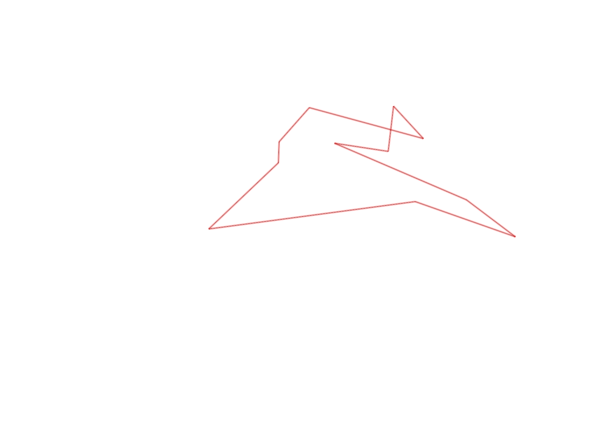
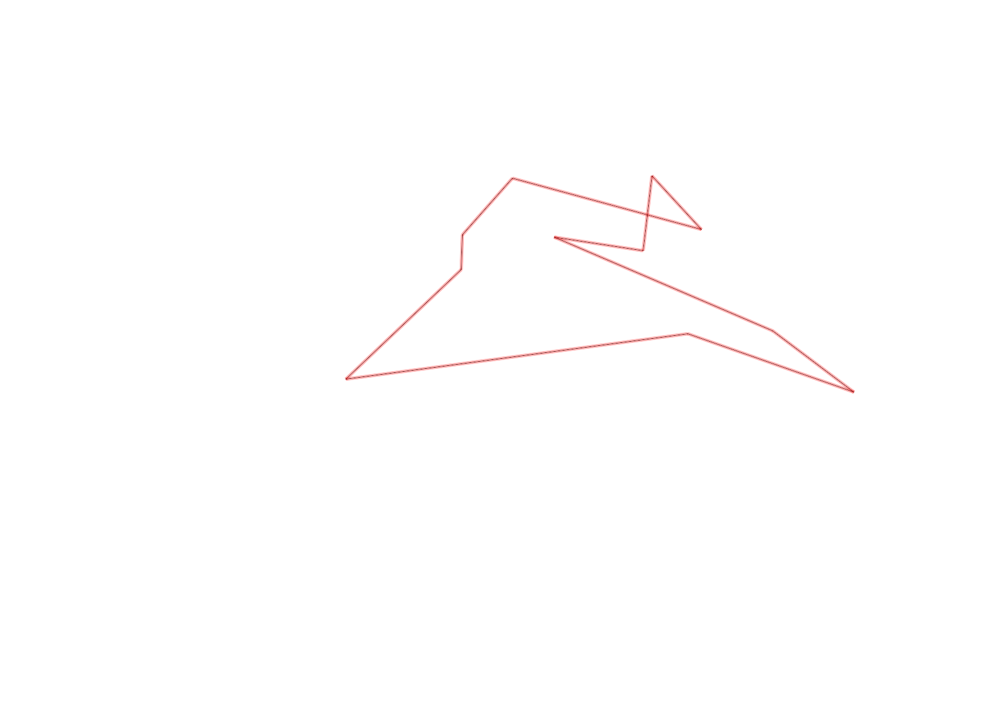

| Control |
Points |
Time Punched |
Distance |
Your Time |
Pace |
Place |
Fastest Time |
Median Time |
% Behind Fastest |
| 33 |
30 |
|
0.34 |
0:07:05 |
20:50 |
2 / 2 |
0:02:32 |
0:04:48 |
179% |
| 67 |
60 |
|
0.07 |
0:04:09 |
59:17 |
1 / 1 |
0:04:09 |
0:04:09 |
0% |
| 34 |
30 |
|
0.16 |
0:01:42 |
10:37 |
2 / 4 |
0:01:32 |
0:02:01 |
10% |
| 109 |
100 |
|
0.42 |
0:02:52 |
06:49 |
1 / 2 |
0:02:52 |
0:03:01 |
0% |
| 108 |
100 |
|
0.15 |
0:03:02 |
20:13 |
1 / 2 |
0:03:02 |
0:03:46 |
0% |
| 50 |
50 |
|
0.16 |
0:04:17 |
26:46 |
1 / 1 |
0:04:17 |
0:04:17 |
0% |
| 123 |
20 |
|
0.19 |
0:01:59 |
10:26 |
2 / 4 |
0:01:32 |
0:02:21 |
29% |
| 52 |
50 |
|
0.5 |
0:07:10 |
14:20 |
1 / 1 |
0:07:10 |
0:07:10 |
0% |
| 56 |
50 |
|
0.22 |
0:04:36 |
20:54 |
1 / 2 |
0:04:36 |
0:05:12 |
0% |
| 49 |
40 |
|
0.37 |
0:02:52 |
07:44 |
2 / 2 |
0:02:11 |
0:02:31 |
31% |
| Finish |
0 |
|
0.73 |
0:19:06 |
26:09 |
1 / 1 |
0:19:06 |
0:19:06 |
0% |
Total Distance Covered: 3.31km
Points Scored: 530
Late Penalty: 0
Final Score: 530
Total Time: 0hours 58minutes 50seconds
Efficiency: 160.12 points/km
 
